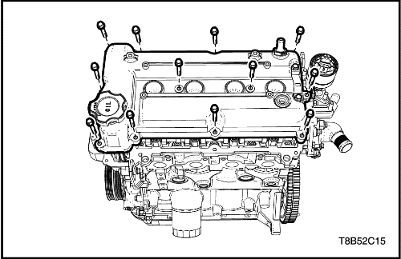


Culata y junta
Procedimiento de desmontaje
- Desconecte el cable negativo de la batería.
- Vacíe el refrigerante del motor. Consulte la Sección 1D, Sistema de refrigeración del motor.
- Libere la presión del combustible. Consulte la Sección 1F1, Controles del motor.
- Desmonte la tapa de la culata. Consulte el apartado "Tapa de la culata" en esta sección.
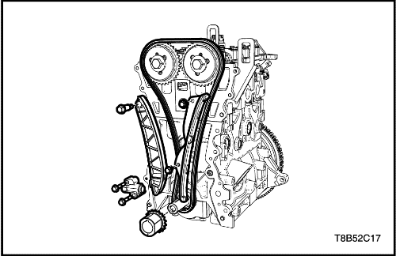
- Extraiga la cubierta de la cadena de distribución. Consulte "Sistema de la cadena de distribución" de esta sección.

- Desmonte el árbol de levas. Consulte el apartado "Árbol de levas"de esta sección.
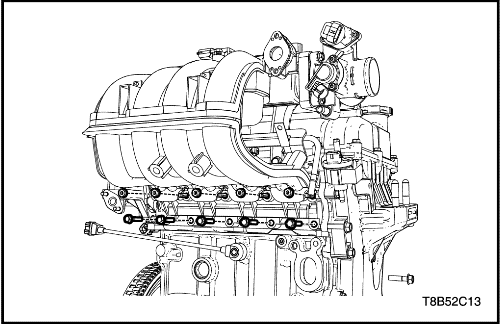
- Desmonte el colector de admisión. Consulte el apartado "Colector de admisión" de esta sección.

- Desmonte el colector de escape. Consulte el apartado "Colector de escape" de esta sección.

- Quite los tornillos de la culata.
- Desmonte la culata con la junta.
Limpieza
- Limpie la superficie de cierre de la culata.
- Limpie la superficie sellado del bloque de cilindros.
- Limpie los tornillos de la tapa de la culata.
- Limpie los taladros de los tornillos de la tapa de la culata.
procedimiento de montaje
- Monte el conjunto de la culata con la nueva junta.
- Apriete los tornillos de la culata.
Apretar
Tornillos de la culata: 22 N•m + 82°
- Monte el colector de escape Consulte el apartado "Colector de escape" de esta sección.
- Monte el colector de admisión. Consulte el apartado "Colector de admisión" de esta sección.
- Monte el árbol de levas. Consulte el apartado "Árbol de levas"de esta sección.
- Monte la cadena de distribución. Consulte "Sistema de la cadena de distribución" de esta sección.
- Monte la tapa de la culata. Consulte el apartado "Tapa de la culata" en esta sección.
- Llene el sistema de refrigeración del motor. Consulte la Sección 1D, Sistema de refrigeración del motor.
- Conecte el cable negativo de la batería.
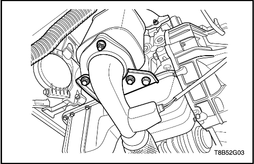
Cárter de aceite
Procedimiento de desmontaje
Precaución: Si el cárter de aceite está deformado al desmontarlo, lo no utilice, use uno nuevo.
- Desconecte el cable negativo de la batería.
- Vacíe el aceite del motor.
- Desmonte el tubo de escape delantero. Consulte la Sección 1G, Sistema de escape del motor.
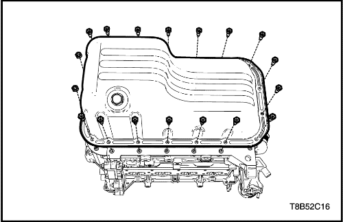
- Quite los tornillos de fijación del cárter del aceite.
- Desmonte el cárter del aceite.
- Desmonte la junta situada entre el cárter de aceite y la superficie de sellado del bloque del motor.
procedimiento de montaje
- Aplique junta líquida en el cárter de aceite.
- Monte el cárter de aceite en el bloque del motor y apriete los tornillos de retención del cárter.
Apretar
Tornillos de retención del cárter de aceite: 10,5 N•m (7,7 lb-pie).
- Monte el tubo de escape delantero. Consulte la sección 1G, Sistema de escape del motor
- Añada el aceite del motor.
Bomba de aceite
Herramientas necesarias
EN-49072 Instalador: junta delantera del cigüeñal
Procedimiento de desmontaje
- Desconecte el cable negativo de la batería.
- Desmonte la tapa de la culata. Consulte el apartado "Tapa de la culata" en esta sección.
- Desmonte el tubo de escape delantero. Consulte la Sección 1G, Sistema de escape del motor.
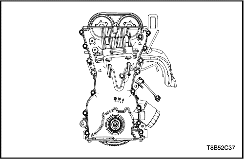
- Desmonte el cárter del aceite. Consulte el apartado "Cárter del aceite" de esta sección.
- Extraiga la cubierta de la cadena de distribución. Consulte "Sistema de la cadena de distribución" de esta sección.
- Desmonte la junta situada entre el cárter de aceite y la superficie de sellado del bloque del motor.
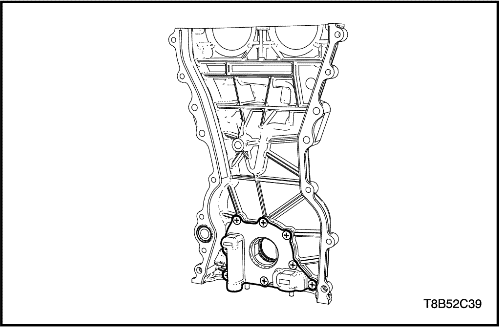
- Desmonte los tornillos de retención de la bomba de aceite de la tapa de la cadena de distribución.
procedimiento de montaje
- Apriete los tornillos de retención de la bomba de aceite de la tapa de la cadena de distribución y monte la bomba de aceite.
Apretar
Tornillos de la tapa de la bomba de aceite: 10 N•m (7,4 lb-pie).
- Instale la cubierta de la cadena de distribución. Consulte "Sistema de la cadena de distribución" de esta sección.
Aviso: Si el retén de aceite delantero del cigüeñal está dañado, sustitúyalo por otro nuevo. Al instalar el retén de aceite delantero en la bomba de aceite, procure que la ranura de cierre mire hacia la superficie de contacto de la carcasa de la bomba de aceite.
- Monte el retén de aceite delantero del cigüeñal utilizando el instalador (EN-49072).
- Monte el cárter del aceite. Consulte el apartado "Cárter del aceite" de esta sección.
- Monte la tapa de la culata. Consulte el apartado "Tapa de la culata" en esta sección.
- Monte la tapa del cable de la bujía.
- Conecte el cable negativo de la batería.

Bancada de motor
Herramientas necesarias
DW110-060 Soporte del conjunto de fijación del motor
Procedimiento de desmontaje
- Desmonte el conjunto de filtro del aire. Consulte "Conjunto del filtro de aire" de esta sección.
- Sujete el conjunto del motor utilizando la fijación del soporte del conjunto motor DW 110-060.
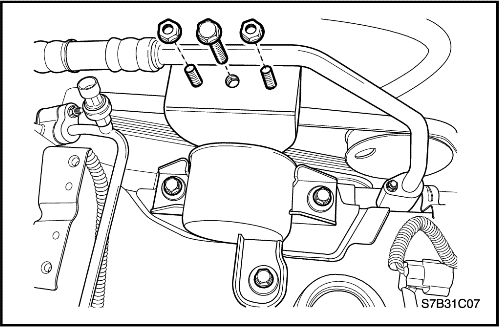
- Extraiga los tornillos/tuercas de retención del soporte de fijación del motor.
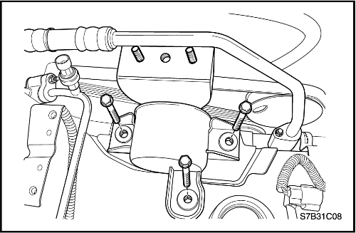
- Quite los tornillos de retención de la fijación del motor.
- Desmonte el conjunto de fijación del motor.
procedimiento de montaje
- Coloque el soporte de fijación del motor.
- Apriete los tornillos de retención de la fijación del motor.
Apretar
Tornillos de retención de fijación del motor: 55 N•m (40,5 lb-pie).
- Apriete los tornillos/tuercas de retención del soporte de fijación del motor.
Apretar
Tornillos/tuercas de retención del soporte de fijación del motor: 65 N•m (47,9 lb-pie).
- Desmonte la fijación del soporte del conjunto del motor DW 110-060.
- Monte el conjunto del filtro de aire. Consulte "Conjunto del filtro de aire" de esta sección.
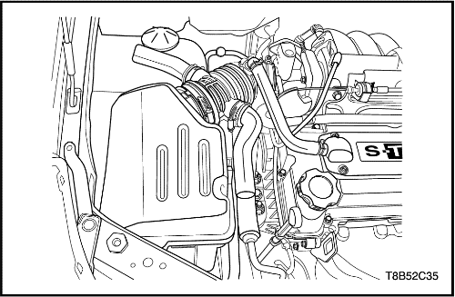
Fijación del soporte del
Herramientas necesarias
DW010-010 Extractor/instalador del soporte del conjunto de la caja de cambios y del motor
Procedimiento de desmontaje
- Descargue el sistema del aire acondicionado (A/C), si estuviera disponible.
- Vacíe el aceite de la dirección asistida, en caso de tenerla.
- Vacíe el refrigerante del motor. Consulte la Sección 1D, Sistema de refrigeración del motor.
- Desmonte la batería y la bandeja portabatería. Consulte la sección 1E, Sistema eléctrico del motor.
- Desmonte el conjunto de filtro del aire. Consulte "Conjunto del filtro de aire" de esta sección.
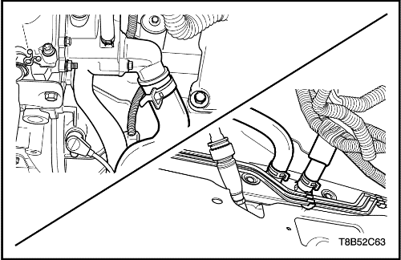
- Desconecte el tubo flexible de admisión y salida del radiador.
- Desconecte el tubo flexible de admisión y salida del núcleo del calefactor.
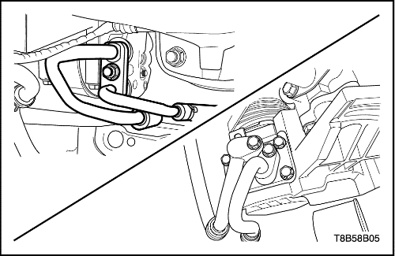
- Desconecte el manguito de la bomba de la dirección asistida. Consulte la Sección 6B, Bomba de la dirección asistida.
- Desmonte el manguito del compresor del aire acondicionado de dicho compresor. Consulte la Sección 7B, Sistema de calefacción, ventilación y aire acondicionado de control manual.
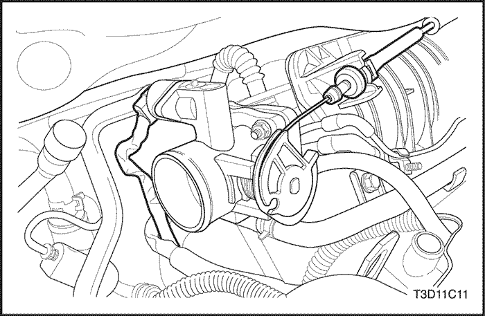
- Desconecte el cable del acelerador.
- Desenchufe el conector del TPS.
- Desenchufe el conector de IACV.
- Desenchufe el conector del sensor de presión del aire acondicionado.
- Desconecte el cable del presostato del aceite de la dirección asistida.
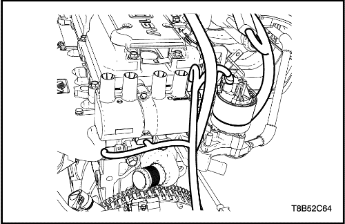
- Desenchufe el conector del sensor de temperatura del refrigerante.
- Desenchufe el conector de la válvula de EGR.
- Desenchufe el conector del sensor del árbol de levas.
- Desenchufe el conector de la bobina de encendido.
- Desenchufe el conector del sensor de oxígeno.
- Desenchufe el conector del sensor de posición del cigüeñal.
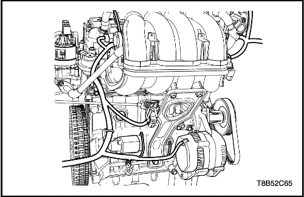
- Desenchufe el conector principal del inyector.
- Desenchufe el conector del solenoide del cartucho.
- Desenchufe el conector del solenoide del VGIS.
- Desenchufe el conector del motor de arranque. Consulte la Sección 1E, Sistema eléctrico del motor
- Desenchufe el conector del alternador. Consulte la Sección 1E, Sistema eléctrico del motor
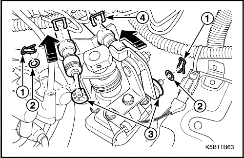
- Desmonte el cable y los conectores del embrague. Consulte la Sección 5B, Caja de cambios manual de cinco velocidades, si la hay.
- Desmonte el cable de control del cambio del auto transeje. Consulte la Sección 5A, Caja de cambios automática AISIN, si existe auto transeje.
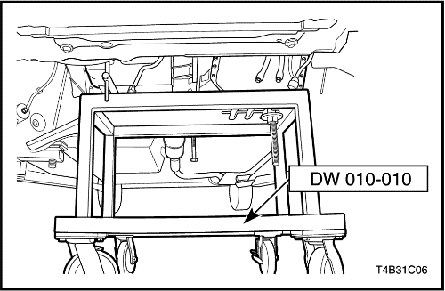
- Sujete el conjunto del motor utilizando la fijación del soporte del conjunto motor DW010-010.
- Desmonte el soporte de fijación del motor. Consulte el apartado "Fijación del motor" de esta sección.
- Desmonte el soporte de fijación del transeje.
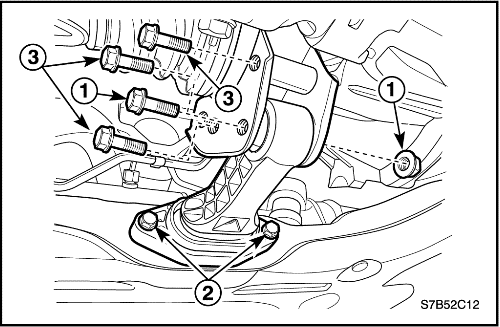
- Desmonte la fijación trasera de la caja de cambios.
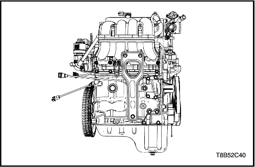
- Desmonte el conjunto del motor.
- Desmonte la transmisión del conjunto del motor.

- Desmonte el volante motor (transmisión manual) o la placa de acoplamiento flexible (transmisión automática).
procedimiento de montaje
- Monte el volante motor (transmisión manual) o la placa de acoplamiento flexible (transmisión automática).
Apretar
Tornillos del volante motor/placa de acoplamiento flexible: 45 N•m (33,2 lb-pie).
- Monte la transmisión en el conjunto del motor.
Apretar
Tornillos del conjunto de la transmisión (caja de cambios manual y automática) : 60 N•m (44,2 lb-pie).
- Sujete el conjunto del motor utilizando la fijación del soporte del conjunto motor DW010-010.
- Monte el soporte de fijación del motor. Consulte el apartado "Fijación del motor" de esta sección.
- Monte el soporte de fijación del transeje. Consulte el apartado "Fijación del motor" de esta sección.
- Monte la fijación trasera de la caja de cambios.
- Conecte el cable y los conectores del embrague. Consulte la Sección 5B, Caja de cambios manual de cinco velocidades, si la hay.
- Conecte el cable de control del cambio del auto transeje. Consulte la Sección 5A, Caja de cambios automática AISIN, si existe auto transeje.
- Enchufe el conector principal del inyector.
- Enchufe el conector del solenoide del cartucho.
- Enchufe el conector de solenoide del VGIS.
- Enchufe el conector del motor de arranque. Consulte la Sección 1E, Sistema eléctrico del motor
- Enchufe el conector del alternador. Consulte la Sección 1E, Sistema eléctrico del motor
- Enchufe el conector del sensor de temperatura del refrigerante.
- Enchufe el conector de la válvula EGR.
- Enchufe el conector del sensor del árbol de levas.
- Enchufe el conector de la bobina de encendido.
- Enchufe el conector del sensor de oxígeno.
- Enchufe el conector del sensor de posición del cigüeñal.
- Conecte el cable del acelerador.
- Enchufe el conector del TPS.
- Enchufe el conector de IACV.
- Enchufe el conector del sensor de presión del aire acondicionado.
- Conecte el cable del presostato del aceite de la dirección asistida.
- Monte el manguito en la bomba de la dirección asistida. Consulte la Sección 6B, Bomba de la dirección asistida.
- Monte el manguito en el compresor del aire acondicionado. Consulte la Sección 7B, Sistema de calefacción, ventilación y aire acondicionado de control manual.
- Conecte el tubo flexible de admisión y salida del radiador.
- Conecte el tubo flexible de admisión y salida del núcleo del calefactor.
- Reponga el refrigerante en el sistema de refrigeración del motor. Consulte la Sección 1D, Sistema de refrigeración del motor.
- Monte la batería y la bandeja portabatería. Consulte la Sección 1E, Sistema eléctrico del motor
- Monte el conjunto del filtro de aire. Consulte "Conjunto del filtro de aire" de esta sección.
 |
|
 |
|
| © Copyright Chevrolet Europe. Reservados todos los derechos |